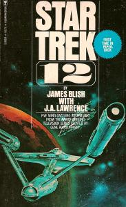

Star Trek 12 |
|
|
|  | |
| AUT | James Blish J.A. Lawrence-Blish |
| PAG | 178 (prima edizione in paperback) 178 (terza ristampa) |
| EDI | Bantam Books, 1977 (prima edizione in paperback) Bantam Books, 1979 (seconda ristampa) Bantam Books, 1985 (terza ristampa) |
| ISBN | 0-553-11382-8 0-553-25252-6 (terza ristampa) |
Novelization di: Patterns of Force,
The Gamesters of Triskelion,
And the Children Shall Lead,
The Corbomite Maneuver,
Shore Leave.